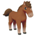
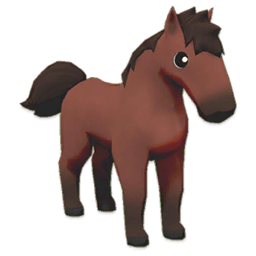
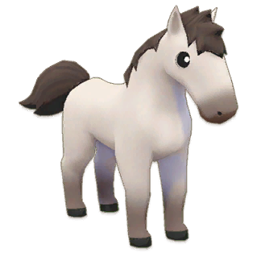
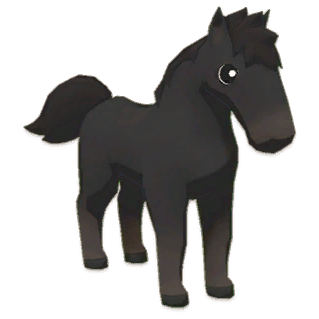
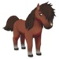
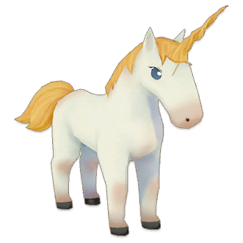
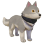

Establo


Al igual que las mascotas, los animales del establo se pueden comprar en el mostrador de Bridget en la tienda de mascota. La mayoría de los animales del establo estarán disponibles después de domesticar al Caballo Marrón, aunque hay algunos que solo se pueden desbloquear a través del Santuario.

Caballo marrón 5.000 G
Caballo marrón 5.000 G

Caballo rojo 10.000 G
Caballo rojo 10.000 G

Caballo blanco 10.000 G
Caballo blanco 10.000 G

Caballo negro 10.000 G
Caballo negro 10.000 G

Caballo cemental 50.000 G
Caballo cemental 50.000 G

Unicornio 100.000 G
Unicornio 100.000 G

Lobo 100.000 G
Lobo 100.000 G
Puedes usar a tus monturas para desplazarte por toda la ciudad o por tu granja.